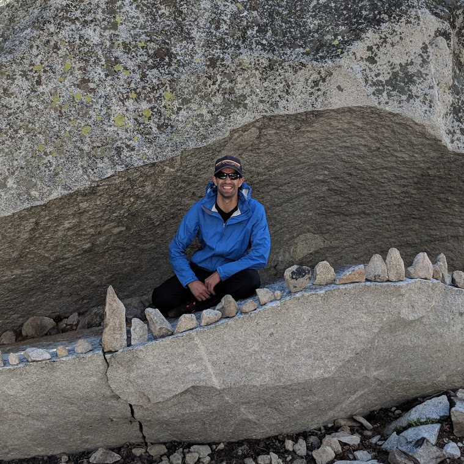

Who is James deMelo?
- I batted .534 and stole 63 bases my second year of little league, at least according to my totally not dorky 'MLB Super Data Blaster'.
- I created a fully functional, web-based, biology video game using javascript in high school.
- I applied to college planning to studying music but ended up in a neuroscience lab.
- I ran my first ultramarathon without having run more than 14 miles.
- I probably (definitely) care way too much about Strava KOM's.
🥞 Best Pancakes: Elm St. Market (Lenox, MA)
🍪 Boston Bakery: Bova's (North End, Boston, MA)
🥪 Resident Sandwich Shop: Marcucci's Bakery (Fall River, MA)
- I created a fully functional, web-based, biology video game using javascript in high school.
- I applied to college planning to studying music but ended up in a neuroscience lab.
- I ran my first ultramarathon without having run more than 14 miles.
- I probably (definitely) care way too much about Strava KOM's.
🥞 Best Pancakes: Elm St. Market (Lenox, MA)
🍪 Boston Bakery: Bova's (North End, Boston, MA)
🥪 Resident Sandwich Shop: Marcucci's Bakery (Fall River, MA)